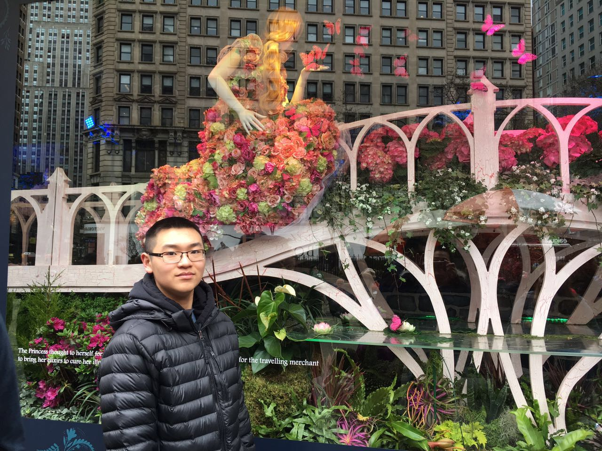

About me

Who am I?
I am a senior currently studying computer science at the University of Michigan - Ann Arbor, currently expecting to graduate Spring 2023.
I am also a Unity Game Developer, with a focus on UI/UX. I am also a Web Developer, with experience with both frontend (HTML/CSS, JavaScript, React, Jinja) as well as backend(Flask, SQLite, Rest API).
My goals
I am currently looking for full-time opportunities in the game industry, with a focus on UI/UX and game design roles. I am also looking for web and software developer roles.
Skills
Programming Languages: C++, C#, JavaScript, MATLAB, Python, Visual Basic
Technologies/frameworks: Unity, Unreal, Flask, Git, Github, HTML/CSS, Jinja, Jira, React, SourceTree, SQLite, Visual Studio Code, Visual Studio
Work Experience
KUKA Assembly & Test Corp
Software Engineer Intern
July 2022 - August 2022
China King Family Restaurant
Cashier/Food Service
November 2012 - September 2022
Projects
Featured below is a selection of some of my projects.
Click the project thumbnails or titles to play!
Cavelit
Technologies: C#, Unity, Github, Jira
Description: Cavelit is a 2D platformer game, developed by a 5 person team for EECS 494. It also includes freelance contributions for music, SFX, and voicing. You play as Bob, a miner who has be caught in a cave-in, and need to find a way out of the depths.
The game was developed using the Unity Engine. My personal contributions include creating the initial dynamite implementation, the player death sequence, the iniital dynamite and dynamite pickups, scene transitions, the title and ending screens, work on the UI (including the battery/health positioning to follow the player, implementing the dynamite counter, and the player life counter that is shown in the death sequence). I also contributed to level design in the form of initial ideas, general tweaks like darkness level and ambient player lighting, as well as pre-deliverable quality checks. The game trailer and development blogs were also put together by me, which are featured on the Cavelit itch.io page and IndieDB & TIGForums respectively.
A2 GO
Technologies: Unity, Mapbox, Mixamo, Sketchfab, Github, Jira
Description: A2 Go is an AR project created in the image of Pokemon GO, where instead players go about the city of Ann Arbor to plant seeds, grow trees, and fend of the chunky Ann Arbor squirrels. Built through the Unity game engine, this was my first project making use of real-time location data to update in-game state. This was my second project in EECS 498 - Extended Reality and Society.
The game was developed using the Unity Engine and the Mapbox SDK, which helps track the user's location using GPS coordinates, updating maps and in-game object locations in real time. Working with a partner, we AR game loosely resembling the popular Pokemon GO mobile game. My personal contributions include setup with the Mapbox SDK, work on the UI/UX implementations, looking for and importing SFX and assets & 3D models for trees, squirrels, and acorns. I also worked to implement landmarks and corresponding popups.
CSE Simulator
Technologies: Unreal, Github, Jira
Description: CSE Simulator is a VR project created loosely in the image of the computer lab located in the Bob and Betty Beyster Building. Built through the Unreal game engine, it features use of Unreal's blueprint scripting and use of various external assets to create an unique and interactive environment. This was my first project in EECS 498 - Extended Reality and Society.
The game was developed using the Unreal Engine. Working with a partner, we created a virtual environment that loosely recreates the computer lab located in room 1695 BBB. My personal contributions include mapping out the room layout and scale, importing and working to integrate external 3D models and materials, creating the NPCs and 3D dialogue popups, as well as the copy machine. I also worked to integrate SFX, lighting that worked with the interactive fire alarm system, and time passage that occured with every interaction.
Gacha Slimes
Technologies: C#, Unity, Github, Jira
Description: Gacha Slimes is a 2D platformer, and is the second project I made for EECS 494. The game was created individually by me, but does make use of free visual and audio assets. The core idea behind the game behind the game is to create a platformer that has a core "gacha" mechanic that would change the way that players progress through the levels.
The game was developed using the Unity Engine. Specific contributions from me include creating movement and attack scripts, prefabs for the slime enemies and interactable objects in the levels, as well as scene management scripts. The UI was also a major part of development, where I implemented UI elements linked to the game objects by making use of an Eventbus scheme. The "gacha" sequence involved making use of coroutines to play out the "animations" and pausing the game in the background when the gacha interface was active. Core mechanics and game level design, as well as the corresponding playtest and feedback, were also major parts of my development process. Changes were kept track of using a Github repository, as well as Jira to keep track of tasks.
Legend of Zelda NES remake
Technologies: C#, Unity, Plastic SCM, Jira
Description: This is a Legend of Zelda clone, created with a partner as the first project in EECS 494. This involved remaking the first dungeon of the original NES game, including the enemies, traps, and weapons availiable at that point in the game. Additionally, we also implemented our own custom mechanic and level — a moving laser obstacle that only damages the player when they are moving, inspired by a similar mechanic featured in Undertale.
My specific contributions to this project include the implementation of the Keese (the bat enemies), which involved a randomized non-grid based movement different from the other enemies, as well as Aquamentus (the boss) and the Wallmaster enemies (the hands that grab the player, sending them to the beginning of the dungeon). I implemented many of the environmental aspects of the game. Water tiles, pushable blocks, locked doors & keys, pickups, and room transition sequences are among this list. Other core gameplay elements I worked include player health and UI, the implementation of god mode (cheat mode, allows for easier time testing), as well as contributing towards the custom mechanic and level design. I notably implemented the starting tutorial sequence of the custom level.
Roll-a-Chicken
Technologies: C#, Unity
Description: A simple Roll-a-Ball game created as part of setup for EECS 494. This included implementing a simple movement script, a jump mechanic that made use of raycasts to determine if the player was on ground (and hence could jump), as well as an updating UI score counter. The 3D models used in the game were from the Unity Asset Store as free assets.